Átomo é a partícula que constitui a matéria, ou seja, é tudo aquilo que possui massa e volume. É dividido basicamente em duas regiões: o núcleo, de caráter positivo, e a eletrosfera, de caráter negativo. Apesar de vir do grego, “indivisível”, o átomo é dividido em partículas menores, conhecidas como partículas subatômicas.
O átomo, apesar de não ser perceptível a olho nu ou com os melhores instrumentos ópticos, pode ser estudado e compreendido por meio de modelos, os quais foram se desenvolvendo conjuntamente com a ciência. O átomo teve origem na Grécia Antiga, por meio dos filósofos Leucipo e Demócrito, tendo sido, inicialmente, uma ideia.
Os átomos são estruturas que não podem ser vistas nem pelos melhores dos instrumentos ópticos disponíveis. Assim sendo, a compreensão da sua estrutura e das suas propriedades ocorreu por diversos experimentos, os quais foram dando pistas sobre como é a natureza do átomo.
Conforme a tecnologia foi avançando e avanços na ciência foram sendo alcançados, a forma de se entender o átomo também foi caminhando progressivamente. Para fins didáticos, os cientistas foram definindo, ao longo da história, modelos atômicos, ou seja, formas de representação do átomo, baseadas nas conclusões de cada época, para melhor explicar a estrutura atômica.
O primeiro modelo científico do átomo é do começo do século XIX, desenvolvido pelo inglês John Dalton, inspirado pelo pensamento newtoniano do século XVIII e começo do XIX. Newton, que faleceu no século XVIII, era entusiasta da teoria corpuscular da matéria, citando as ultimate particles, as quais seriam as menores partículas da matéria.
Dalton, grande entusiasta da meteorologia e exímio estudioso de gases, ao lado de William Henry, desenvolveu um modelo para explicar questões relacionadas à atmosfera e aos gases. Seu modelo, comumente associado com bolas de bilhar (pois era centrado nas massas atômicas relativas), especulou sobre diferenças de massas entre os átomos constituintes das diferentes substâncias elementares.
A partir daí, o estudo do átomo foi se aprimorando com o avanço da ciência. No fim do século XIX, Joseph John Thomson, baseado nos trabalhos de Michael Faraday e William Crookes, descobriu que os fenômenos elétricos têm origem no átomo, descobrindo o elétron.
Depois, no começo do século XX, catapultado pela descoberta da radioatividade, Ernest Rutherford apresentou o modelo atômico mais conhecido, o do sistema solar, mostrando que as partículas negativas deveriam orbitar o núcleo denso e positivo, tal como os planetas orbitam o Sol.
Foi no começo do século XX que a ciência passou também por uma grande revolução, com a descoberta e o desenvolvimento da mecânica quântica. Com ela, Niels Bohr fez correções significativas ao modelo de Rutherford, o qual apresentava problemas de instabilidade.
O átomo de Bohr é o primeiro modelo que se utiliza da mecânica quântica para explicar o comportamento das partículas constituintes do átomo. Contudo, o desenvolvimento da mecânica quântica fez o átomo ser, cada vez mais, aprimorado.
O modelo de Bohr se mostrou certo apenas para um tipo de átomo (os hidrogenóides, com 1 próton e 1 elétron), necessitando-se de complexos modelos matemáticos para se explicar a natureza do átomo. É daí que surgiu o modelo proposto pelo cientista Erwin Schrödinger, cujos cálculos são usados, até hoje, para se entender a estrutura atômica.
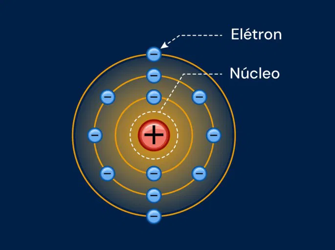
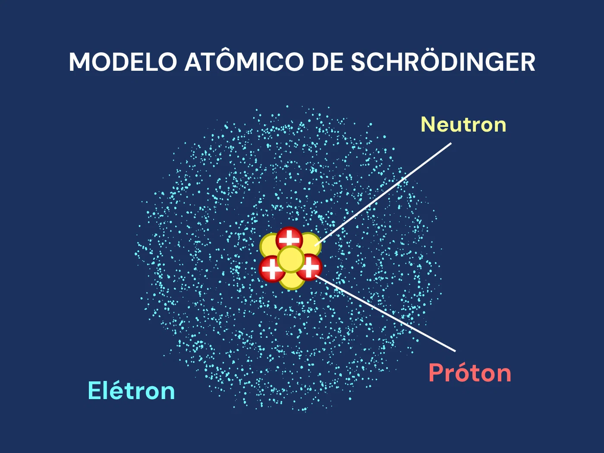
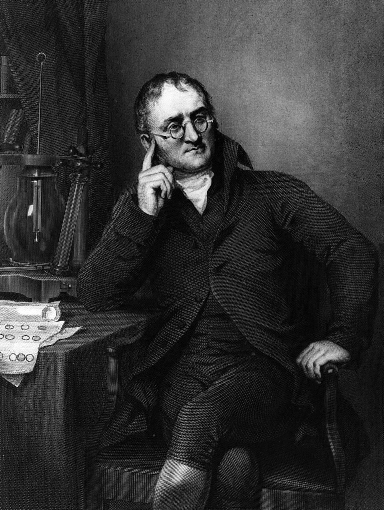
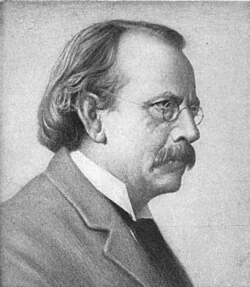
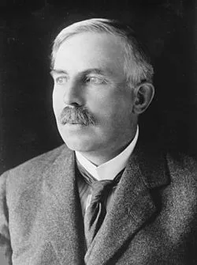
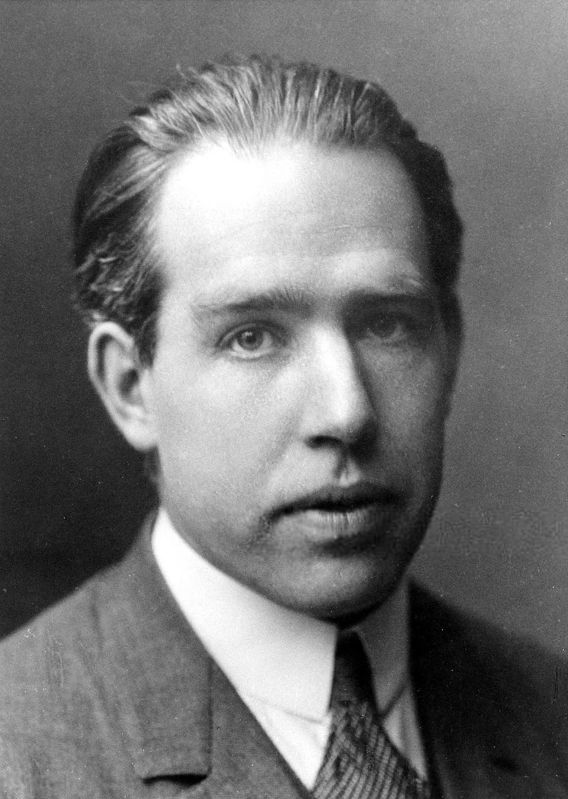
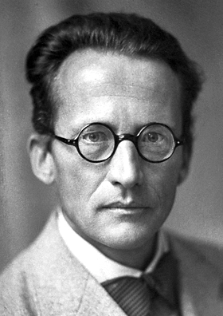
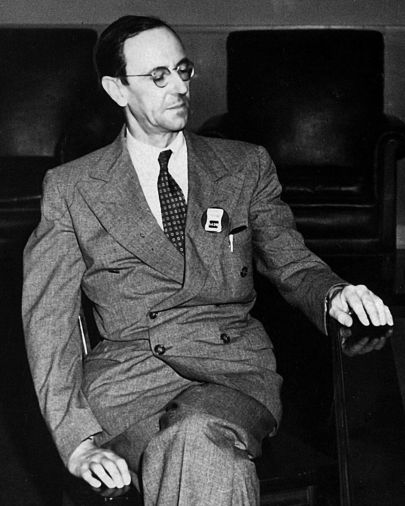
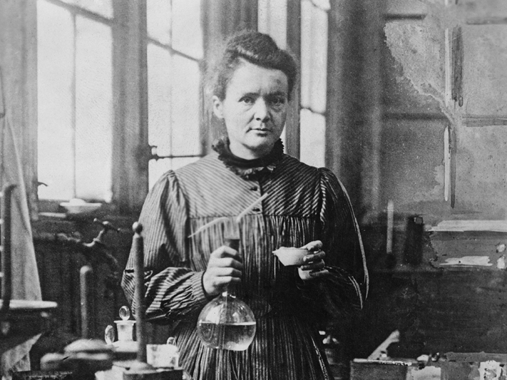
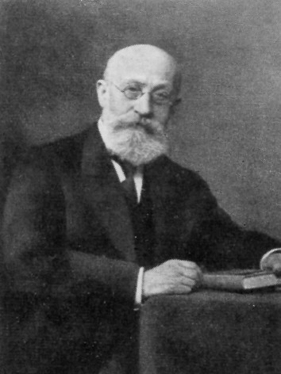
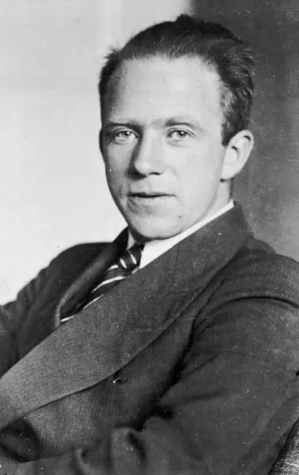
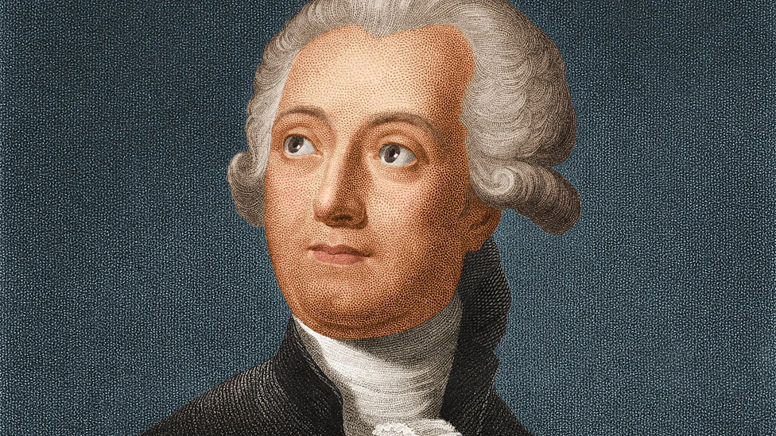